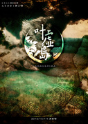

【フライヤー】

2015/9/30 – 10/4 とりにく特別企画公演 とりささ第二弾！
【叶虚島】
劇場：中野 テアトルBONBON
代表：佐藤洸
演出：もりたえみ
脚本：あやし
「どんな願いでも叶える……ルインの参加者に選ばれたんだ。」
争い事とは無縁だった青年が、何の因果か年に１度だけ行われるバトルゲームに強制参加。
なんでもそのゲームに勝つとどんな願いでも叶うという。
願いを叶えるため参加するもの、目立つために参加するもの、いろんな人に囲まれて
青年はいつしかゲームの渦中に巻き込まれていく……。
とりささ第二弾はまさかのバトルロワイヤル！？
殺陣師のアキラが主宰で送る、アクション多めのとりささ公演！
【フライヤー】

2014/2/14 - 2/16 とりにく第六回公演
宴、疑う、唄方の
劇場：中野 ザ・ポケット
作・演出：あやし
時は大正、古くから続く旧家の次男坊である青年が
ある日相続として「ある場所」の土地と建物の管理を引き継ぐことに。
悲しみながらもその場所へ行くと、空き家のはずの建物には
何故か"人"がすんでいて…。
和風ファンタジー歌劇！
とりにく第六回公演は歌のあるお芝居に挑戦！
【フライヤー】
2012/8/30 - 9/2 とりにく特別企画公演 とりささ！
退魔師・裏
劇場：中野 テアトルBONBON
代表：佐藤洸
演出：あンな邦裕
脚本：あやし
あの退魔師が帰ってきた！？
とりにく旗揚げ公演「退魔師」
妖怪側にたって描かれた退魔師を、今度は退魔院側から描きます。
知られることのなかった本当の退魔師が今ここに。
「そんなこと…俺にはそれが何より重い。」
演出と代表を変えて、特別企画公演として上演します。
【フライヤー】
2011/9/30～10/2 とりにく番外編公演 やきとり第二回
本日開店/本日閉店
劇場：荻窪 喫茶ミニヨン
作演出：あやし
荻窪のとある喫茶店で巻き起こる、人狼風味の謎解きミステリー！
観客参加型の実験的特殊密室劇。
【フライヤー】

2010/07/29～8/1 とりにく 第五回公演
大正妖奇譚 -TAISHOU AYAKASHI KITAN-
劇場：吉祥寺シアター
作演出：あやし
【フライヤー】

2009/12/11～13 とりにく 第四回公演
【人形屋】
劇場：池袋シアターグリーン BOX in BOX
作演出：あやし
【フライヤー】

2009/04/17～19 とりにく番外編公演
やきとり企画 【スーパースイーパー】
劇場：池袋GEKIBA
作演出：あやし
【フライヤー】

2008/06/06～08 とりにく 第三回公演
【ゴーストメイカー -セーラー服と日本刀-】
劇場：目白風姿花伝
作演出：あやし
【フライヤー】

2007/08/03～05 とりにく 第二回公演
【アマラカマラ -AmaraKamara-】
劇場：大塚萬スタジオ
作演出：あやし
【フライヤー】
2006/08/04～07 とりにく 第一回公演
【 退 魔 師 -taimashi-】
劇場：池袋シアターグリーン base theater
作演出：あやし